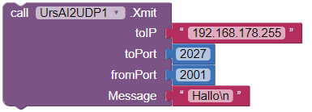
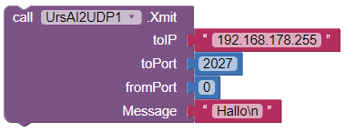
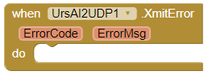
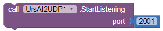
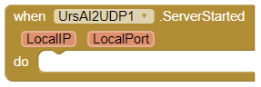
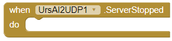
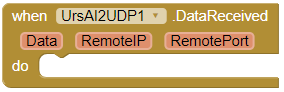
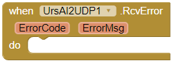
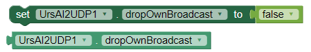

Ullis robot page
I me: E-Mail to Ulli
Imprint
An Android app should be developed for a project, that communicates with an ESP8266(-Projekt). The with app inventor 2 should be used for app development due to the ease of use.
The IP addresses of available ESP8266 devices should not be specified in the project. The app should itself determine which devices are currently active and at what addresses it can be addressed.
To accomplish this task (name service) offered the use of the broadcastfunction of UDP . It simply sends a broadcast datagram to all devices on the local network with the prompt return to provide their own connection data to an agreed port. The devices listening on the agreed port, then return your IP and if necessary additional data to the sender. The sender collects the responses and therefore knows all active devices. Because the package delivery with UDP is not guaranteed, it is advisable to repeat this process and to take advantage of the Union of the answers.
To specifically address the devices of a project, they agreed a project identifier in the response are either different ports or you. The recipient then picks out those devices that interest him.
Now comes the crux. The App Inventor has no built-in UDP and I found also a working extension (extension). Make it so yourself.
The ZIP archive UrsAI2UDP to download. The archive contains the source code and the compiled binary to the upload in the App Inventor.
Sending of datagrams is done via the method xmit.

This block of 2017 sends datagrams to the broadcast IP of "192.168.178.255" and the port. The content of the datagram is "Hallo\n". The port is used to send in 2001. The sending port must not be set. Zero or a negative value is specified the block looking yourself any free port:

An error occurs during the reception, the XmitError event is raised:

Following ErrorCodes are defined:
| ErrorCode | Importance |
|---|---|
| 1 | The IP address is invalid. |
| 2 | Invalid fromPortspecification. |
| 3 | Broadcast cannot. This error should never occur. |
| 4 | Failed to send. |
TestTask::errorMsg contains the error in plain text. It contains also the message of the operating system and is addressed to the developers of the app rather rather than to its users.
To receive datagrams, following methods available are:
|  | Starts "Listening" on datagrams that are sent to the port in 2001 (UDP server). |
| Stops the server. |
In this there is the event ServerStarted

LocalIP and LocalPort reception address and the event ServerStopped

IsRunning property can be queried whether the server is currently active.
When data is received, the DataReceived event is raised:

Data contains the datagram data RemoteIP and remote port of the sender address.
An error occurs, the RcvError event is raised:

Following ErrorCodes are defined:
| ErrorCode | Importance |
|---|---|
| 5 | Server error |
TestTask::errorMsg contains the error in plain text. It contains also the message of the operating system and is addressed to the developers of the app rather rather than to its users.
The dropOwnBroadcast property controls the behavior of when broadcast datagrams. The block is by default set to ignore messages, which were sent by the own IP. Should this still be received, is to set dropOwnBroadcast to false .

Own local IP address can be obtained via the LocalIP property.
To be able to develop your own extensions, you must install some tools. The installation of the tools and the development of a sample extension is described very well in KIO4.com . Unfortunately, a mixture of English and Spanish, but yet easy to understand, step by step explained first and foremost. Also the app inventor has a Tutorial page.
The development of extensions is done with JAVA. You can find a tutorial about datagrams in the Oracle JAVA documentation. There is also information about the used class DatagramSocket.